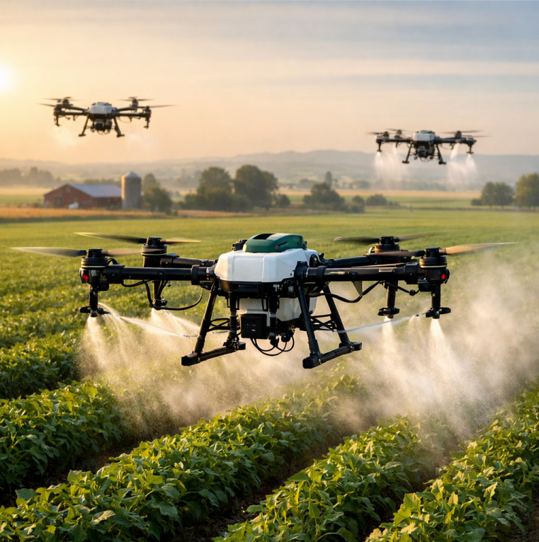
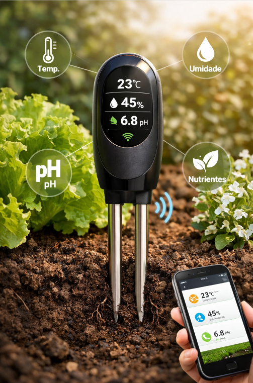
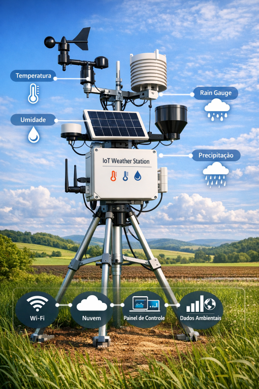

Tecnologia que você vê resultados na primeira safra
Monitoramento contínuo e recomendações de plantio baseadas em IA.
Reduza o consumo em até 40% com irrigação inteligente e sensores.
Alertas antecipados com machine learning para proteger sua lavoura.
Equipamentos e software de ponta

Mapeamento aéreo com NDVI, análise de estresse hídrico e aplicação de precisão.

Monitora umidade, pH e nutrientes em tempo real com dados via satélite.

Previsão local, alertas de geada/estiagem e integração com irrigação automática.